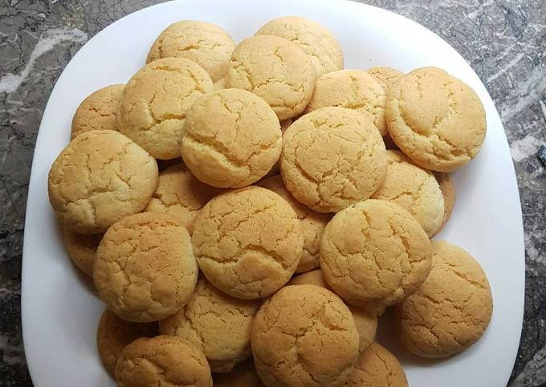

Inicio
Galletitas de vainilla

Descripción
Acá te presentamos una receta sencilla para preparar galletitas de
vainilla con pocos ingredientes en casa, un clásico del verano en
Argentina. Solo es necesario seguir cuidadosamente los pasos para
asegurarte de que queden perfectas, y luego podés darle rienda suelta a tu
imaginación si querés añadirles toppings.
Estas galletas son ideales para llamar la atención de los niños en casa,
ya que no requieren mucho amasado y la diversión real comienza al
decorarlas. A diferencia de la pizza, en este caso, es importante no
amasar la mezcla en exceso para asegurar que queden crocantes.
Ingredientes
- 250 gramos de harina leudante
- 100 gramos de manteca
- 100 gramos de azúcar
- 1 huevo
- 1 cucharadita de esencia de vainilla
Pasos
- Precalentar el horno a 180 grados.
-
En un bowl, batir la manteca con el azúcar hasta obtener una crema.
- Agregar el huevo y la esencia de vainilla y batir hasta integrar.
-
Incorporar la harina leudante y mezclar hasta formar una masa homogénea.
- Estirar la masa con un palote hasta obtener un grosor de 5 mm.
- Cortar las galletitas con un cortante de galletas o con un vaso.
-
Colocar las galletitas en una bandeja para horno enmantecada o con papel
manteca.
- Hornear durante 15-20 minutos, o hasta que estén doradas.
-
Dejar enfriar las galletitas sobre una rejilla antes de servirlas.